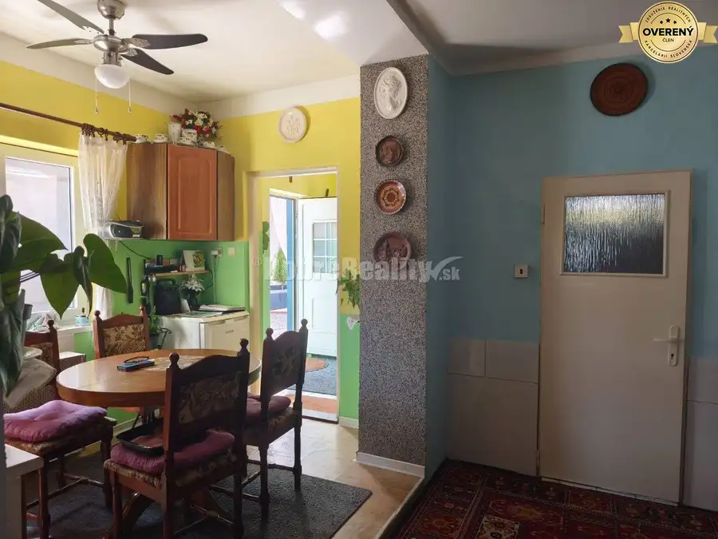
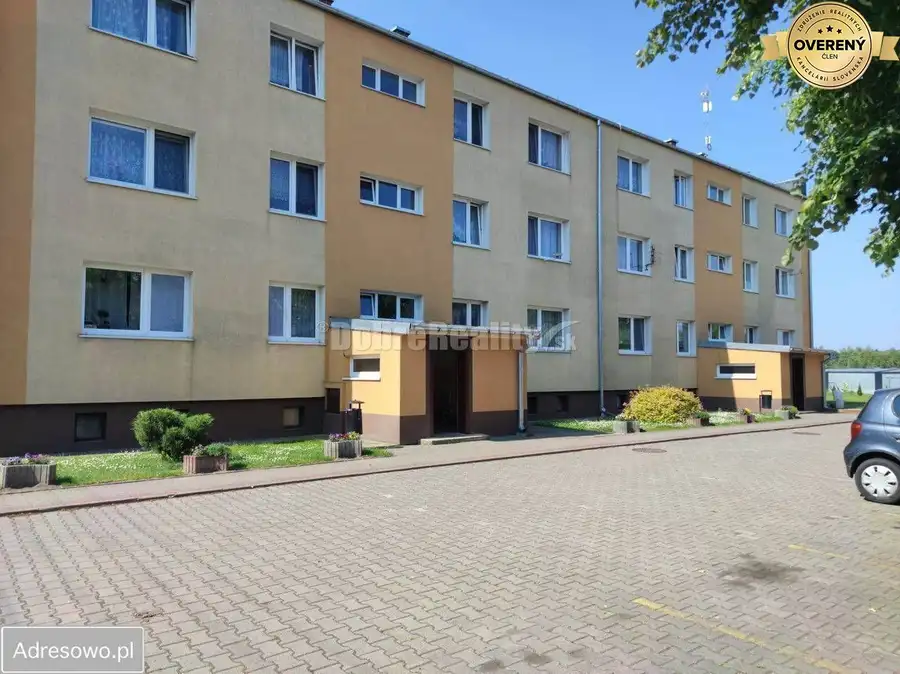
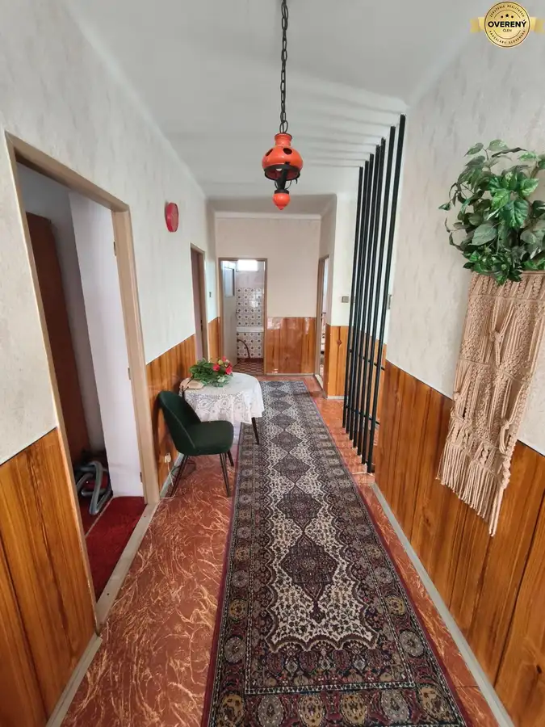

Starší rodinný dom v obci Vlčany , vhodný na kompletnú rekonštrukciu
Vlčany
- Dispozícia4-izbový
- Plocha120 m²
- Stavpôvodný
- Vlastníctvoosobné
O nehnuteľnosti
Ponúkam exkluzívne na predaj 4-izbový RD zo 60-tych rokov s rozlohou cca 150 m2 v tichej uličke v obci Vlčany. Svojou polohou je dom vhodný na trvalé bývanie. Dispozične pozostáva z chodby, jednej priechodnej a 3 samostatných izieb , veľkej kuchyne. Z jednej izby dá sa spraviť kúpeľňu . Dom je v pôvodnom stave , postavený z nepálenej tehly. Na pozemku, 7 árov je pripojka plyna, v zadnej časti dvora je dielňa. Na pozemku je suché WC. Dvor je pomerne široký, s možnosťou parkovania niekoľkých áut. Obec ponúka dobrú občiansku vybavenosť a je vzdialená 15 km od okresného mesta Saľa.
Rodinný dom:
- materiál: nepálená tehla
- strecha zachovalá-škridla
- úžitková plocha 150 m2
- okná aj dvere sú pôvodné drevené
- dielňa
-suché WC
IS:
- elektrika
- voda
-pripojka plynu vo dvore(plyn je aj v dome.-odpojený )
Pozemok:
- 717 m2
Výhody nehnuteľnosti:
- tichá časť obce
- príjemné prostredie
- 7 árový rovinatý pozemok
- v blízkosti šport. ihrisko, obchody, škola, škôlka, pošta, rybník, reštauracia
Cena:
Cena nehnuteľnosti je 42.000,-Eur vrátane provízie a kompletného právneho servisu.
Dobré Reality klientom poskytujú komplexné služby realitného sprostredkovania a celoslovenskú internetovú inzerciu. Už viac ako 10 rokov nám dôverujú tisícky klientov.
Hľadáme nových kolegov a ponúkame najvýhodnejšie podmienky! K nášmu tímu profesionálnych obchodníkov s nehnuteľnosťami sa môžete pridať na: dobrereality.sk/kariera
Parametre
| Rozloha pozemku | 717 m² |
|---|---|
| Zastavaná plocha | 150 m² |
| Úžitková plocha | 120 m² |
| Počet izieb | 4 |
| Vlastníctvo | osobné |
| Stav | pôvodný |
| Voda | verejný vodovod |
| El. napätie | 230V |
| Plyn | áno |
| Kanalizácia | žumpa |
| Kúpeľňa | áno |
| Vykurovanie | spoločné |
| Parkovanie | vonkajšie |
| Postavené z | tehla |
| Energetický certifikát | nie |
| Terén | mierny svah |
| Prístupová cesta | asfaltová cesta |
| Dátum zverejnenia | 12. 9. 2024 |
Kde to je
Mohlo by Vás zaujímať

Rodinné domy10 79 000 €Zachovalý 3 izbový domček v Seliciach k okamžitému nasťahovaniu . Selice 3-izbový140 m² Ponúkame Vám na predaj príjemný 3 izbový domček v obci Selice . Postavaný je na pozemku veľkom 907 m/2 z tehál . Rok výstavby cca 1960. Zastavaná…
Byt4 105 000 €Príjemný ,útulný 1 izbový bytík priamo v centre Galanty. Galanta 1-izbový38 m² Ponúkame Vám na predaj útulný 1 izbový byt v centre mesta Galanta. Nachádza sa v tichej lokalite na prízemí zatepleného bytového domu . Rozloha bytu…
Rodinné domy5 155 000 €Priestranný dvojpodlažný rodinný dom pre veľkú rodinu-super stav. Neded 7-izbový360 m² Ponúkame Vám na predaj rodinný dom v obci Neded, ktorý čaká na nového majiteľa a nový príbeh. Dom je v pôvodnom stave, čo ponúka priestor na…